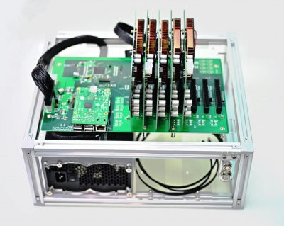

{% extends "products.html" %}
{% block t %} Safe Algorithm Speedup Board {% endblock t %}
{% block description %}
According to application requirements, algorithm module customization and FPGA selection customization are provided.
{% endblock description %}
{% block img %}

{% endblock img %}
{% block body %}
Product details
Product Features
-
CPU Cores can be chosen from various series such as 8051/ARM/IBEX/RISC5
-
Various traditional information security algorithms/blockchain industry algorithms can be selected according to the application requirements
-
Security protection components such as code encryption, anti-SPA/DPA attack, and anti-slice cracking can be selected according to the security protection level of the chip
-
According to the terminal application requirements, it can provide algorithm hardware acceleration engine support such as neural network and machine hearing.
Market positioning
-
Block chain, Internet of Things, artificial intelligence terminal-side main control chip to meet specific edge computing needs
Chip algorithm customization
-
CoreChain provides algorithm-related design documents and source code
-
The algorithm bearing hardware platform can be selected according to customer needs
{% endblock body %}